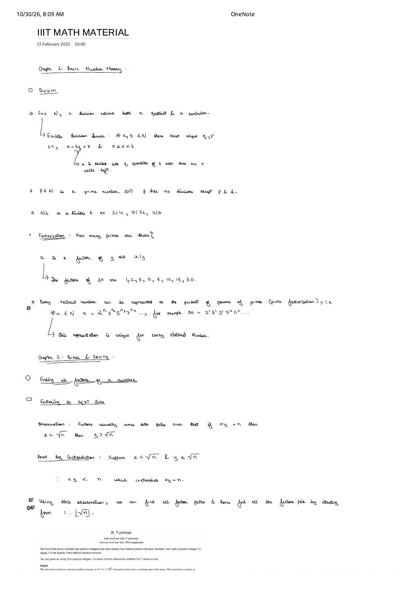
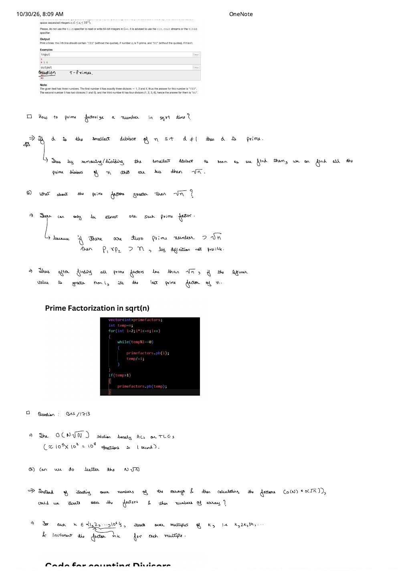
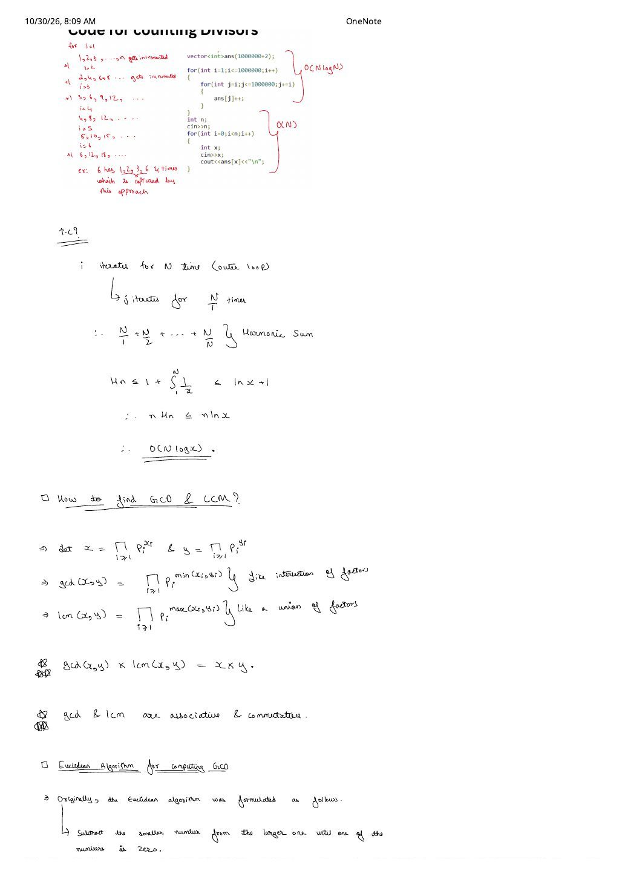
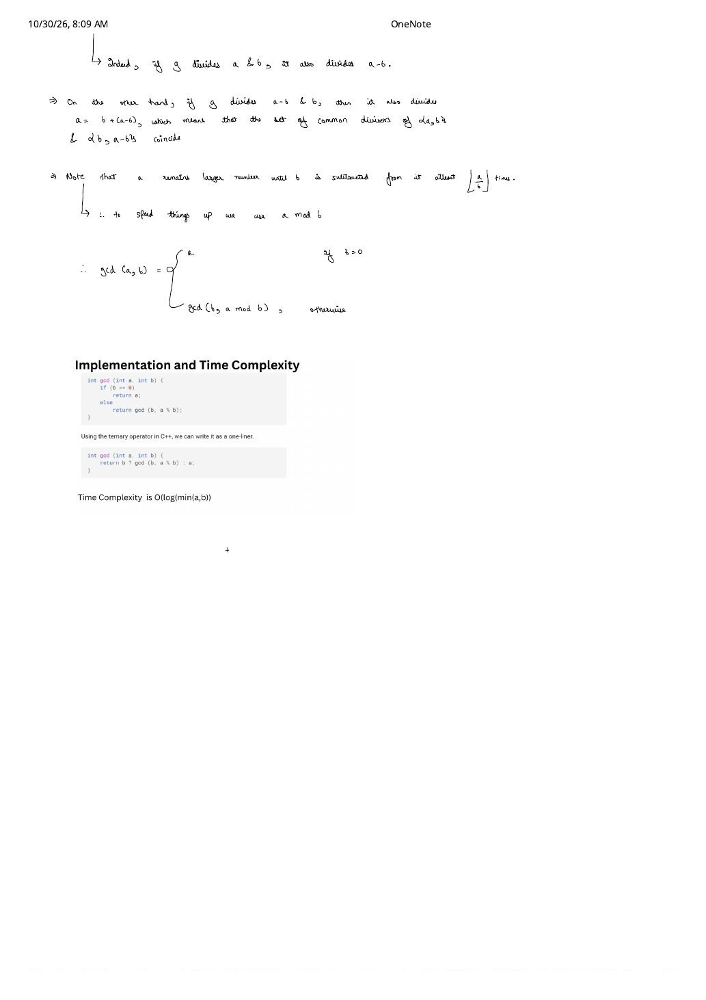

IIIT Math Foundations: Division, $\sqrt{n}$ Factoring, Harmonic Sums & Euclidean GCD
Expanded from handwritten competitive coding study note: 01_IIIT_MATH_MATERIAL.pdf (4 pages)
Before memorizing number-theoretic templates, it pays to see why each bound holds. These notes from the IIIT competitive programming math material build from Euclid's division lemma and the Fundamental Theorem of Arithmetic to four indispensable contest patterns: $\sqrt{n}$ divisor pairing, prime-square characterization (Codeforces 230B T-Primes), $O(N \log N)$ bulk divisor counting via the Harmonic Series (CSES 1713), and the exact divisor-invariance proof behind Euclid's $O(\log(\min(a,b)))$ GCD algorithm.
1. Division, Divisibility & Unique Prime Factorization
Integer division over natural numbers returns two quantities simultaneously: a quotient $q$ and a bounded remainder $r$.
Euclid's Division Lemma
For any integers $a \in \mathbb{N}$ and $b \in \mathbb{N}^+$, there exist unique integers $q$ and $r$ such that:
$$a = bq + r \quad \text{with} \quad 0 \le r \lt b$$Intuitively, $a$ is partitioned into $q$ full groups of size $b$ until $r$ leftover units remain ($r \lt b$ so no further full group can be formed).
- Divisibility ($a \mid b$): We write $a \mid b$ ("$a$ divides $b$", equivalently "$a$ is a factor of $b$") iff the remainder $r = 0$, i.e., $b = aq$ for some integer $q$. From the handwritten examples: $2 \mid 4$, $7 \mid 56$, and $1 \mid 7$ ($1$ divides every integer).
- Prime Number: An integer $p \in \mathbb{N}$ ($p \gt 1$) is prime $\iff$ $p$ has no positive divisors other than $1$ and $p$ itself.
- Factors of a composite number: $x$ is a factor of $y \iff x \mid y$. For $y = 30$, the complete set of positive factors is $\{1, 2, 3, 5, 6, 10, 15, 30\}$.
Fundamental Theorem of Arithmetic (Unique Prime Factorization)
Every natural number $n \ge 1$ can be represented uniquely (up to ordering) as a product of powers of primes:
$$n = 2^{n_1} \cdot 3^{n_2} \cdot 5^{n_3} \cdot 7^{n_4} \cdots = \prod_{i \ge 1} p_i^{n_i}, \qquad n_i \ge 0$$For example, $30 = 2^1 \cdot 3^1 \cdot 5^1 \cdot 7^0 \cdot 11^0 \cdots$ (and $1$ corresponds to all exponents $n_i = 0$).
2. Factoring in $O(\sqrt{n})$ Time & Codeforces T-Primes
Testing every candidate $1 \dots n$ to find divisors takes $O(n)$ time, which fails as soon as $n \ge 10^9$. The key observation is that divisors always arrive in complementary pairs $(x, y)$ satisfying $x \cdot y = n$.
Proof by Contradiction: Why Iterating up to $\lfloor \sqrt{n} \rfloor$ Finds Every Factor Pair
Claim: Whenever $x \cdot y = n$ with $x \neq y$, one factor is strictly less than $\sqrt{n}$ and its partner is strictly greater than $\sqrt{n}$ (if $x \lt \sqrt{n}$, then $y \gt \sqrt{n}$).
Proof: Suppose for contradiction that $x \lt \sqrt{n}$ and $y \le \sqrt{n}$. Multiplying the two positive inequalities gives $x \cdot y \lt \sqrt{n} \cdot \sqrt{n} = n$, which contradicts $x \cdot y = n$. Symmetrically, if both $x \gt \sqrt{n}$ and $y \gt \sqrt{n}$, then $x \cdot y \gt n$, another contradiction.
Therefore, every divisor larger than $\sqrt{n}$ has a unique partner $x = n / y \le \sqrt{n}$. Scanning $x \in \{1, 2, \dots, \lfloor\sqrt{n}\rfloor\}$ discovers both $x$ and $n/x$ in $O(\sqrt{n})$ time!
Application: Codeforces 230B — T-Primes
A prime number has exactly two positive divisors ($1$ and $p$). Problem B. T-primes defines a positive integer as a T-prime if it has exactly three distinct positive divisors. Given $n \le 10^5$ integers $x_i \le 10^{12}$, determine for each $x_i$ whether it is T-prime.
- From the handwritten sample (
4 5 6):- $4$ has divisors $\{1, 2, 4\}$ (count $= 3$) $\implies$
YES. - $5$ has divisors $\{1, 5\}$ (count $= 2$) $\implies$
NO. - $6$ has divisors $\{1, 2, 3, 6\}$ (count $= 4$) $\implies$
NO.
- $4$ has divisors $\{1, 2, 4\}$ (count $= 3$) $\implies$
- Structural insight: Every non-root divisor $d \lt \sqrt{x}$ contributes two distinct divisors $(d, x/d)$. Thus $x$ has an odd number of divisors if and only if $x$ is a perfect square ($x = r^2$, where $r = \sqrt{x}$ pairs with itself). Furthermore, $\{1, r, r^2\}$ are the only three divisors iff $r$ itself has no nontrivial divisors—meaning $r$ must be prime!
- Since $x_i \le 10^{12}$, we have $r = \sqrt{x_i} \le 10^6$. Precomputing primes up to $10^6$ with a Sieve lets us answer each query in $O(1)$!
#include <bits/stdc++.h>
using namespace std;
int main() {
ios::sync_with_stdio(false);
cin.tie(nullptr);
const int MAXR = 1000000;
vector<bool> isPrime(MAXR + 1, true);
isPrime[0] = isPrime[1] = false;
for (int i = 2; i * i <= MAXR; i++) {
if (isPrime[i]) {
for (int j = i * i; j <= MAXR; j += i)
isPrime[j] = false;
}
}
int n;
cin >> n;
while (n--) {
long long x;
cin >> x;
long long r = round(sqrt((long double)x));
// x is a T-prime iff x == p^2 for some prime p
if (r * r == x && r <= MAXR && isPrime[r]) {
cout << "YES\n";
} else {
cout << "NO\n";
}
}
return 0;
}3. Prime Factorization of a Single Number in $O(\sqrt{n})$
How do we extract the prime factorization of $n$ in $O(\sqrt{n})$ without precomputing a prime table first? Two short lemmas guarantee that simple trial division only ever records primes:
- Smallest nontrivial divisor is always prime: If $d \gt 1$ is the smallest divisor of the current value
temp, $d$ cannot be composite—if $d = a \cdot b$ with $1 \lt a \lt d$, then $a \mid d \mid \text{temp}$, contradicting the minimality of $d$. Dividingtemprepeatedly by $i$ in awhile (temp % i == 0)loop strips out every prime factor $\le \sqrt{n}$ completely before any composite multiple of $i$ is ever reached. - At most one prime factor can exceed $\sqrt{n}$: Suppose $n$ had two prime factors $p_1 \gt \sqrt{n}$ and $p_2 \gt \sqrt{n}$. Then $p_1 \times p_2 \gt \sqrt{n} \times \sqrt{n} = n$, which is impossible since their product must divide $n$! Consequently, once all prime factors $\le \sqrt{n}$ have been divided out, if the remaining
temp > 1,tempis guaranteed to be the single leftover prime factor of $n$.
vector<long long> primeFactorize(long long n) {
vector<long long> primefactors;
long long temp = n;
for (long long i = 2; i * i <= temp; i++) {
while (temp % i == 0) {
primefactors.push_back(i);
temp /= i;
}
}
if (temp > 1) {
primefactors.push_back(temp); // The unique prime factor > sqrt(n), if any
}
return primefactors;
}4. CSES 1713: Counting Divisors & the $O(N \log N)$ Harmonic Sieve
In CSES 1713 (Counting Divisors), we are given $N \le 10^5$ queries $x \le 10^6$ and asked to report the number of divisors of each $x$.
- Why $O(N \sqrt{X})$ is dangerous here: Running an $O(\sqrt{x})$ loop per query performs up to $10^5 \times \sqrt{10^6} = 10^5 \times 10^3 = 10^8$ expensive hardware modulo (
%) operations in $1\text{ second}$, which either barely passes or TLEs. - Loop Inversion Idea: Instead of iterating over each query number and testing candidate divisors, iterate over each candidate divisor $i \in \{1, 2, \dots, 10^6\}$ and jump across all of its multiples $j = i, 2i, 3i, \dots$, incrementing
ans[j]++using pure addition!
ans[6] = 4. Summing row lengths gives $N/1 + N/2 + \dots + N/N = O(N \log N)$.Harmonic Sum Time Complexity Proof
Let $M = 10^6$ be the maximum domain value. For a fixed outer index $i$, the inner loop for (int j = i; j <= M; j += i) executes $\lfloor M / i \rfloor$ times. Summing over $i = 1 \dots M$:
Bounding the $M$-th Harmonic number $H_M$ from above via the area under $f(x) = 1/x$:
$$H_M = 1 + \sum_{i=2}^{M} \frac{1}{i} \le 1 + \int_{1}^{M} \frac{1}{x}\,dx = 1 + \ln M$$ $$\implies M \cdot H_M \le M(\ln M + 1) = O(M \log M)$$For $M = 10^6$, $M \ln M \approx 1.38 \times 10^7$ simple integer additions—running in well under $0.05\text{ seconds}$—followed by $O(1)$ lookup per query!
#include <bits/stdc++.h>
using namespace std;
int main() {
ios::sync_with_stdio(false);
cin.tie(nullptr);
const int MAXV = 1000000;
vector<int> ans(MAXV + 1, 0);
// Precompute divisor counts in O(MAXV * log(MAXV))
for (int i = 1; i <= MAXV; i++) {
for (int j = i; j <= MAXV; j += i) {
ans[j]++;
}
}
int q;
cin >> q;
while (q--) {
int x;
cin >> x;
cout << ans[x] << '\n'; // O(1) per query
}
return 0;
}5. GCD & LCM Through Prime Exponents
Writing $x = \prod_{i \ge 1} p_i^{x_i}$ and $y = \prod_{i \ge 1} p_i^{y_i}$ turns GCD and LCM into clean multiset intersection and union operations on prime exponents:
Prime-Exponent Duality of GCD and LCM
$$\gcd(x, y) = \prod_{i \ge 1} p_i^{\min(x_i, y_i)} \quad \text{(intersection of prime factors)}$$ $$\operatorname{lcm}(x, y) = \prod_{i \ge 1} p_i^{\max(x_i, y_i)} \quad \text{(union of prime factors)}$$Because $\min(a, b) + \max(a, b) = a + b$ holds for every real pair $(a, b)$, multiplying the two products adds exponents prime-by-prime:
$$\gcd(x, y) \times \operatorname{lcm}(x, y) = \prod_{i \ge 1} p_i^{\min(x_i, y_i) + \max(x_i, y_i)} = \prod_{i \ge 1} p_i^{x_i + y_i} = x \times y$$Both $\gcd$ and $\operatorname{lcm}$ are commutative and associative: $\gcd(a, b, c) = \gcd(\gcd(a, b), c)$ and $\operatorname{lcm}(a, b, c) = \operatorname{lcm}(\operatorname{lcm}(a, b), c)$. (Caution: the product identity $x \cdot y = \gcd(x,y)\operatorname{lcm}(x,y)$ applies to two arguments; for arrays, fold $\operatorname{lcm}$ pairwise using lcm(acc, a[i]).)
6. Euclidean Algorithm Proof & $O(\log(\min(a, b)))$ Implementation
Factoring $a$ and $b$ takes $O(\sqrt{n})$ time, whereas Euclid's algorithm finds $\gcd(a, b)$ without factoring at all. Originally formulated via repeated subtraction—subtract the smaller number from the larger until one reaches $0$—its correctness rests on a two-line divisor equivalence:
Why Common Divisors of $\{a, b\}$ and $\{b, a - b\}$ Coincide
- Forward ($\implies$): If $g$ divides both $a$ and $b$ ($a = gk_1, b = gk_2$), then $a - b = g(k_1 - k_2)$, so $g$ also divides $a - b$.
- Converse ($\Longleftarrow$): Conversely, if $g$ divides both $a - b$ and $b$, then $a = b + (a - b)$ is a sum of multiples of $g$, so $g$ also divides $a$.
Thus $\{a, b\}$ and $\{b, a - b\}$ have the exact same set of common divisors, and hence the exact same greatest common divisor! Since $a$ remains $\ge b$ until $b$ is subtracted $\lfloor a / b \rfloor$ times—leaving remainder $a \bmod b$—we compress all $\lfloor a / b \rfloor$ subtractions into a single modulo operation:
$$\gcd(a, b) = \begin{cases} a & \text{if } b = 0 \\ \gcd(b,\, a \bmod b) & \text{otherwise} \end{cases}$$// Explicit recursive Euclidean GCD
int gcd(int a, int b) {
if (b == 0)
return a;
else
return gcd(b, a % b);
}
// Idiomatic C++ ternary one-liner — Time: O(log(min(a, b)))
int gcd_oneliner(int a, int b) {
return b ? gcd_oneliner(b, a % b) : a;
}From the Handwritten Notes
Expand the original handwritten pages below to inspect the exact derivations, dry runs, and annotations:
View original note — IIIT Math Material (Page 1: Euclid's Division Lemma, Unique Prime Factorization & $\sqrt{n}$ Contradiction Proof)


View original note — IIIT Math Material (Page 2: T-Primes, $O(\sqrt{n})$ Prime Factorization & CSES 1713 Idea)


View original note — IIIT Math Material (Page 3: Harmonic Sum $O(N \log N)$ Proof & Prime-Exponent GCD/LCM)


View original note — IIIT Math Material (Page 4: Euclidean Divisor Invariance Proof & C++ One-Liner)

